Lesson 5 - Physics
Physics
Download the Starter Project
Layout uses one Master Starter Project. If you’ve downloaded it recently, chances are you don’t need to re-download it.
This tutorial requires that you’ve downloaded the starter project as of 4/27/16:
- Click here to download the Layout Master starter project.
- Extract the zip folder.
- Open up the Layout_ToyBoxx.uproject and begin your adventure!
In this lesson, we’ll experiment with physically enabled actors in our physics playground. Cannons, rockets, conveyors, balloons, dominoes - they’re all made possible with physics simulation.
Simulation offers incredible out of the box functionality. We can easily control the behavior of physically enabled actors and components through their public variables. Enabling physics is easy. Getting physics to “feel right” is an art, and effective use requires some care.
Later, we’ll build the Gravity Gun, a tool used to interact with physics objects. The gun is probably the most sophisticated scripting tutorial of the entire series. There are great opportunities to adapt and extend the gun to whatever end best fits your experiences.
- Open the Lessons > Physics > Phyics level
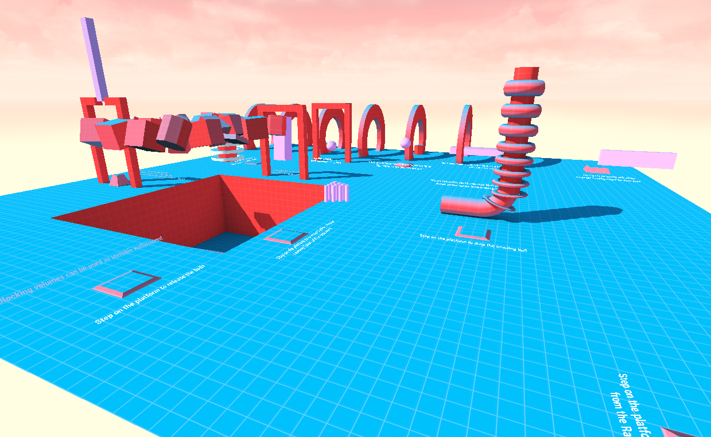
The new physics level in your starter project will look different
The Physics level includes many physically enabled actors that you can interact with as BP_PhysicsPlayer. Some actors are directly interactable by collision with the player or other actors.
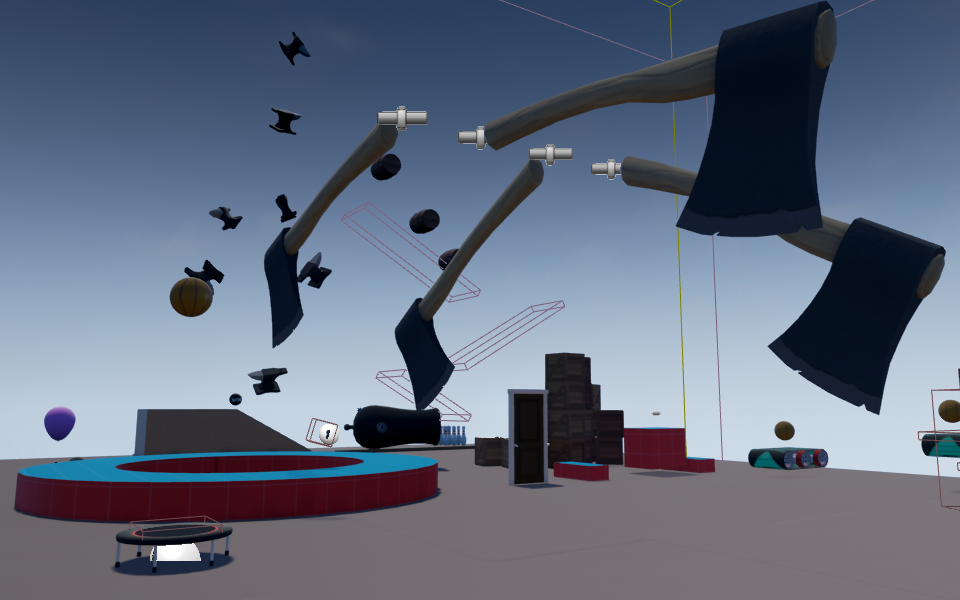
Other actors like BP_Cannon are interactable via the BPI_Physics_Interact interface. BP_Remote and BP_BlastingBox allow the developer to add actors to an Interact With list from the details panel. When the player overlaps, the remote/box will attempt to call an interface function on each actor in the list.
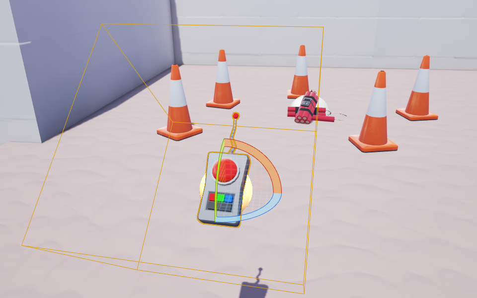
Take a minute to press Play and explore the level.
Simulate Physics
In order to activate physics and use physics nodes, we have to tell an actor and/or component to simulate physics.
- To make an actor simulate physics, check the Simulate Physics box in the corresponding details panel.
Unless otherwise specified, a force is applied to actors according to their mass. By default, mass is calculated as a function of mesh volume.
- To adjust an actor’s mass, check the Mass in Kg option, then edit the value.
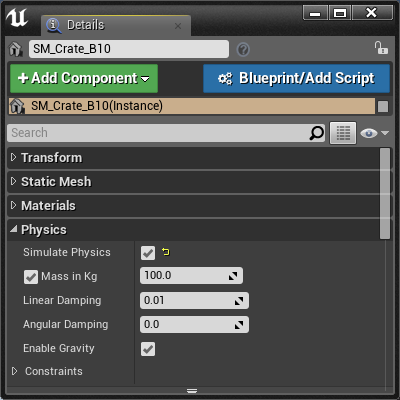
Shooting Radial Forces
Let’s give the player a way to explode actors in the level.
We can start with a blueprint that fires a radial force impulse and destroys itself. We’ll spawn this actor from the player blueprint.
- Create a new actor blueprint called BP_RadialImpulse
- Add a Radial Force component
- Set its Radius to 1000
- Set its Impulse Strength to 150,000
- Set its Force Strength to 0
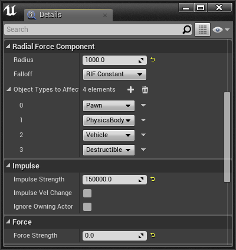
Our Radial Force component is rigged to explode. Now we need to fire the impulse and destroy the actor.
- Open the Event Graph
- Grab a reference to the Radial Force component
- Pull a wire from Radial Force and place a Fire Impulse node.
- BeginPlayFire Impulse
- Place a Destroy Actor node
- Fire ImpulseDestroy Actor
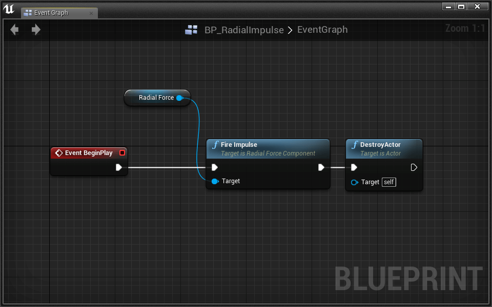
Let’s create a new input action mapping for spawning BP_RadialImpulse.
- Open Settings > Project Settings
- Select the Input submenu
- Add a new Action Mapping
- Name it “PrimaryAction”
- Add Left Mouse Button
- Add Gamepad Right Trigger
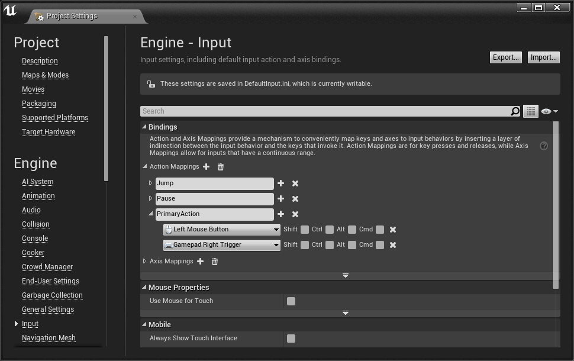
Now we can use the new InputAction PrimaryAction event in our player blueprint.
- Open BP_PhysicsPlayer
Challenge:
Wire the InputAction PrimaryAction event to a line trace from the camera and spawn BP_RadialImpulse at the location of the trace hit.
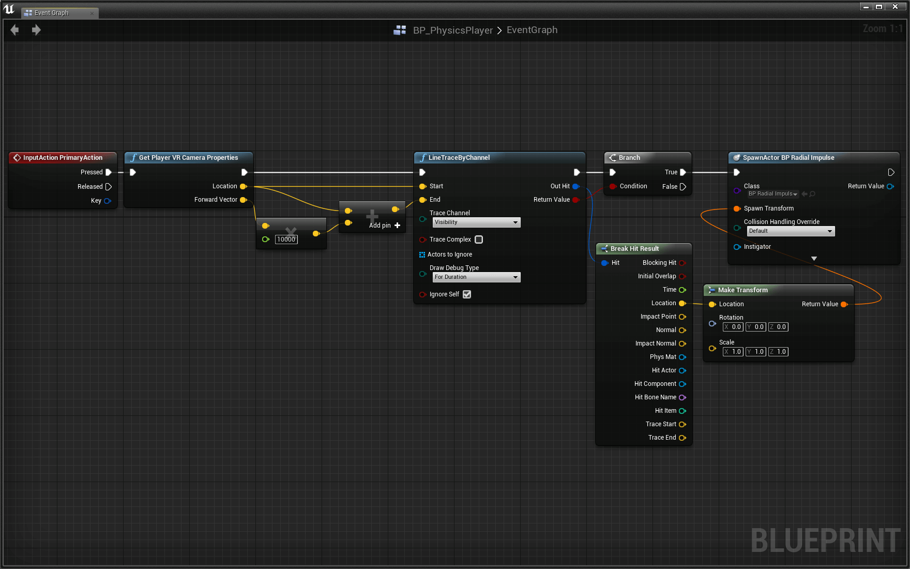
Head over to the anvil pit and try your new ability. Can you feel the power?!
SloMo
Our explosions would look much cooler in slow motion. Let’s create a new action mapping for a slo-mo super power.
- Open Settings > Project Settings
- Select the Input submenu
- Add a new Action Mapping
- Name it SloMo
- Add Left Shift
- Add Gamepad Left Shoulder
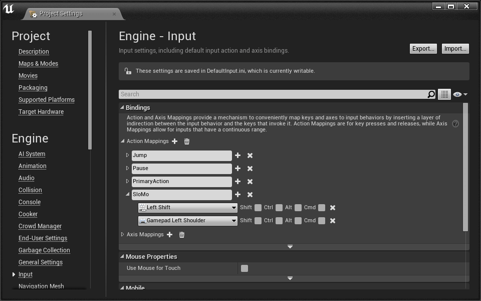
Enabling slow motion is actually quite easy. We just need to use a node called Set Global Time Dilation.
- Open BP_PhysicsPlayer
- Place the InputAction SloMo event
- Place a Set Global Time Dilation with a Time Dilation of 0.2
- Connect this to the SloMo > Pressed execution output
- Place a Set Global Time Dilation with a Time Dilation of 1
- Connect this to the SloMo > Released execution output
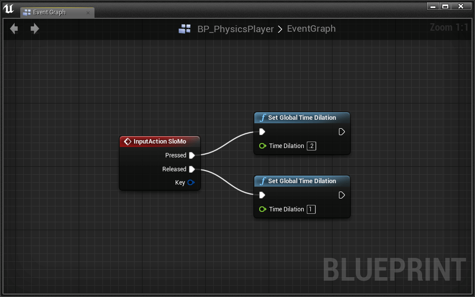
Test it out to feel THE POWER!
Conveyor
Let’s take a quick diversion from player super powers.
You might have noticed that our conveyors don’t actually move objects. We can write a new blueprint script inside of BP_TutorialConveyor to get physically enabled actors moving.
- Open BP_TutorialConveyor’s event graph.
We need some way to determine which objects should be moved by BP_TutorialConveyor. A collision box will tell us when objects are within a reasonable distance of the conveyor belt.
- Add a new Box Collision component
- Open the viewport
- Set Scale to 1.6, 3.0, 0.25
- Set Location to 0.0, 0.0, 41.0
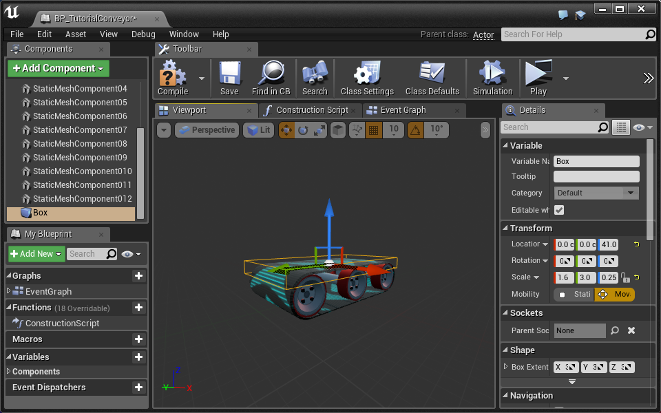
Let’s add OnComponentBeginOverlap and OnComponentEndOverlap events for our collision box.
- Open the event graph.
- Right-click Box in Components and select Add Event > Add OnComponentBeginOverlap
- Right-click Box in Components and select Add Event > Add OnComponentEndOverlap
We need to store all components that overlap our box in a new array variable.
- Add a new variable and name it “Components”
- In the details panel, set Variable Type to PrimitiveComponent > Reference
- Select the array button
You may be wondering why we’re storing components instead of actors. This is because we apply forces to components and not actors.
- Place a reference to Components in the graph
- Pull a wire from Components and place an Add node
- OnComponentBeginOverlapAdd
-
OnComponentBeginOverlap > Other CompAdd
- Pull a wire from Components and add an Remove node.
- OnComponentEndOverlapRemove
- OnComponentEndOverlap > Other CompRemove
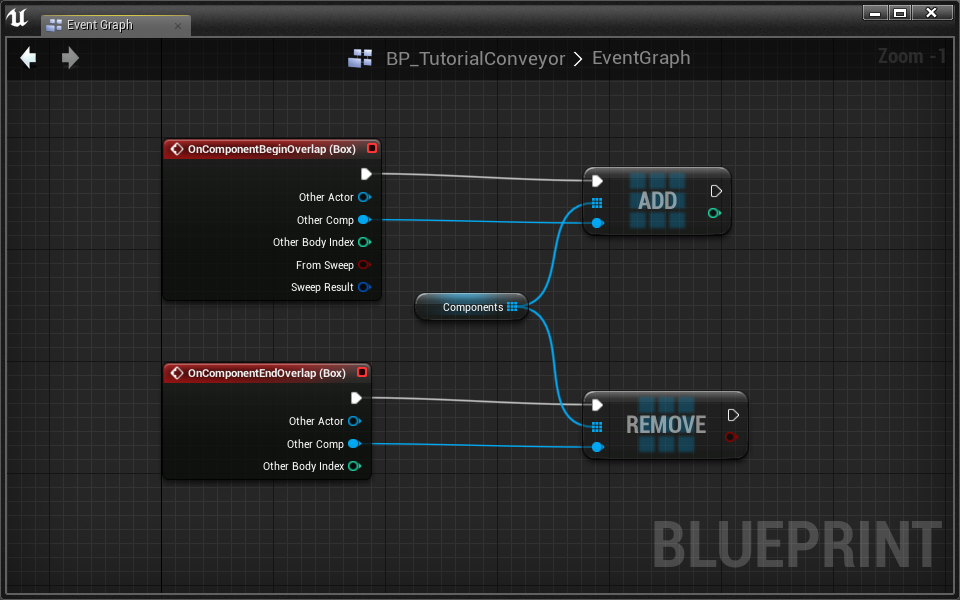
Great! This is everything we need to add and remove components from the array.
Now we need to add a force to each component on Tick.
- Place Tick in the graph
- Place a new reference to Components in the graph
- Pull a wire from Components and add a ForEachLoop node.
- TickForEachLoop
We need to cast Array Element to a static mech component.
- Pull a wire from Array Element and add a Cast To StaticMeshComponent node.
- ForEachLoopCast To StaticMeshComponent
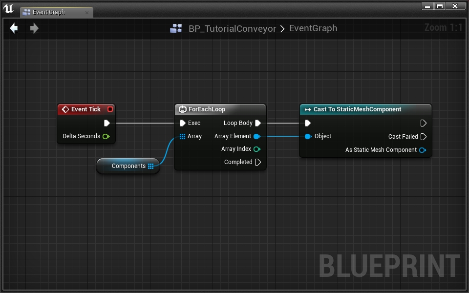
When the cast is successful, we should add a force to the component in the direction of conveyor belt movement. We can specify this direction with an Arrow component.
- Add a new Arrow component
- Open the viewport
- Set Rotation to 0.0, 0.0, -90.0
- Set Location to 0.0, 0.0, 70.0
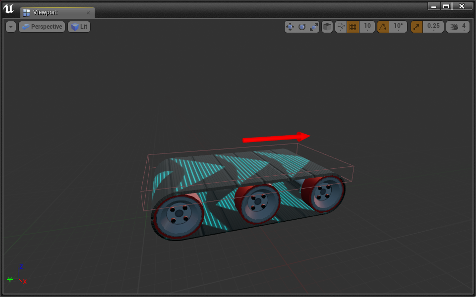
The Arrow component is a useful tool for development. It will not show up in game unless otherwise specified.
We’re nearly done! Let’s add our last function now.
- Pull a wire from Cast To StaticMeshComponent > As Static Mesh Component and add an Add Force node.
- Set Accel Change to True by checking the box
Targeted components respond according to their mass when Accel Change is not set to true. Experiment with this variable later to see what effct this has on different components.
Challenge:
Set Force by multiplying Arrow’s forward vector with a scalar power value.

When you play the level, physically enabled objects should respond to BP_TutorialConveyor. Choo-choo! All aboard the physics train!
Gravity Gun
Let’s pick up and launch physically enabled actors with the Gravity Gun. When complete, the gun will pick up actors when selected and fire them away from the player.
First create a new action mapping. This method will handle picking up and launching actors.
- Open Settings > Project Settings
- Select the Input submenu
- Add a new Action Mapping
- Name it “SecondaryAction”
- Add Right Mouse Button
- Add Gamepad Left Trigger
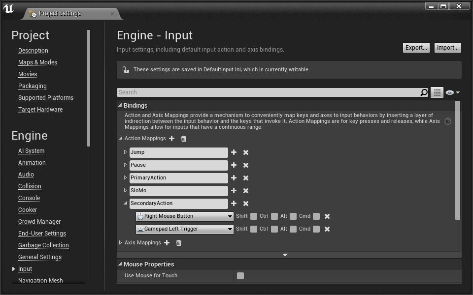
Picking up the actor
When we select an actor, we should snap it in front of the player.
- Open BP_PhysicsPlayer
- Add a new Scene component
- Name it “SnapPoint”
- Attach SnapPoint to Camera
- Position SnapPoint at [240, 0, -35]
SnapPoint is now attached relative to the position of the player’s camera.
We can pick up physics actors with a PhysicsHandle component.
- Add a PhysicsHandle component
The actors we pick up will be attahed relative to PhysicsHandle. This means that we need to update the location of PhysicsHandle everyframe.
Challenge:
On Tick, update the PhysicsHandle component’s location using Set Target Location. Set the location to SnapPoint’s world location.
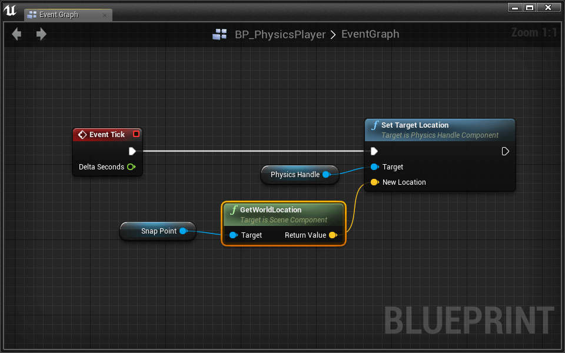
With that done, we’re ready to attach selected physics actors to PhysicsHandle.
- Add our InputAction SecondaryAction event
- Create a new function and call it “Pick Up Object”
- SecondaryActionPick Up Object
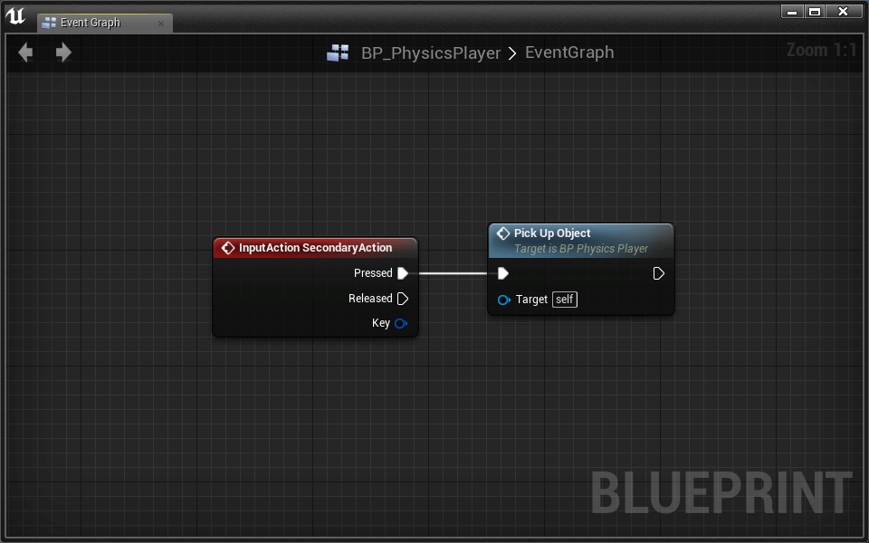
Like we’ve done so many times before, we need to trace from the player. In this case we only want to trace for physically enabled actors. We can do this with the Line Trace For Objects node.
- Open the Pick Up Object function
- Add Line Trace For Objects and set up the usual math
- Pull a wire from LineTraceForObjects > ObjectTypes and select Make Array
- Select PhysicsBody from the Make Array dropdown
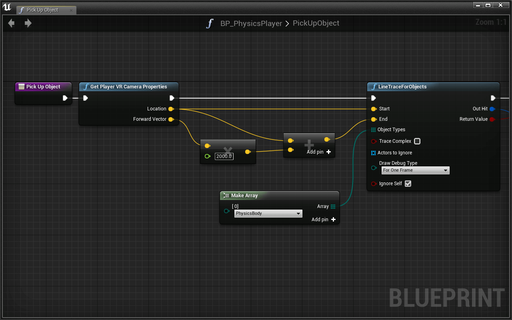
- Place a Branch using the LineTraceForObjects > Return Value
- Place a Break Hit Result connected to LineTraceForObjects > Out Hit
We need to store the hit component in a new variable that we can reference later.
- Create a new Primitive Component variable named HeldPhysicsObject
- Place a Set Held Physics Object node
- Branch > TrueSet Held Physics Object
- Break Hit Result > Hit ComponentHeld Physics Object
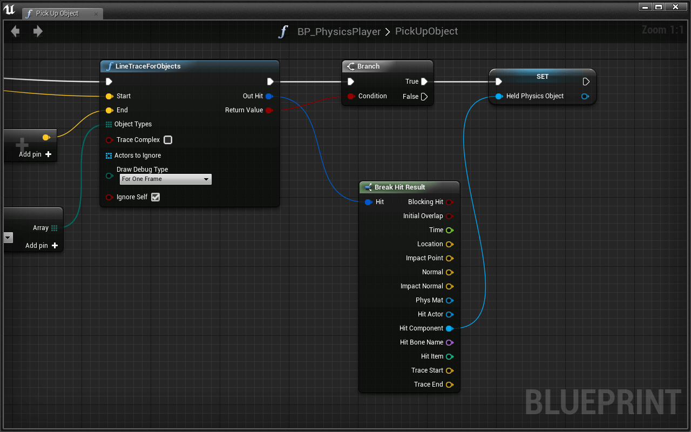
- Place a Grab Component (Physics Handle) node
- Held Physics ObjectGrab Component > Component
- Set Grab Component > Grab Location equal to the Held Physics Object’s world location.
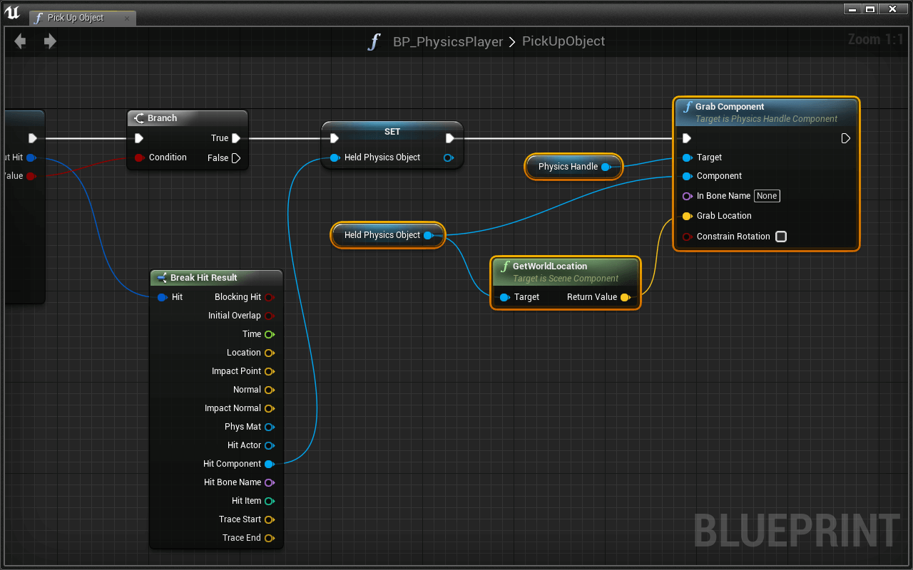
Fantastic! Your gun can now pick up targeted actors.
Launching the actor
Let’s launch picked up physics actors. We can determine whether or not an actor is currently picked up with a boolean variable.
- Create a new Boolean variable called IsGunEngaged
- Add a Set IsGunEngaged node at the end of the Pick Up Object function.
- Set it to True by checking the box
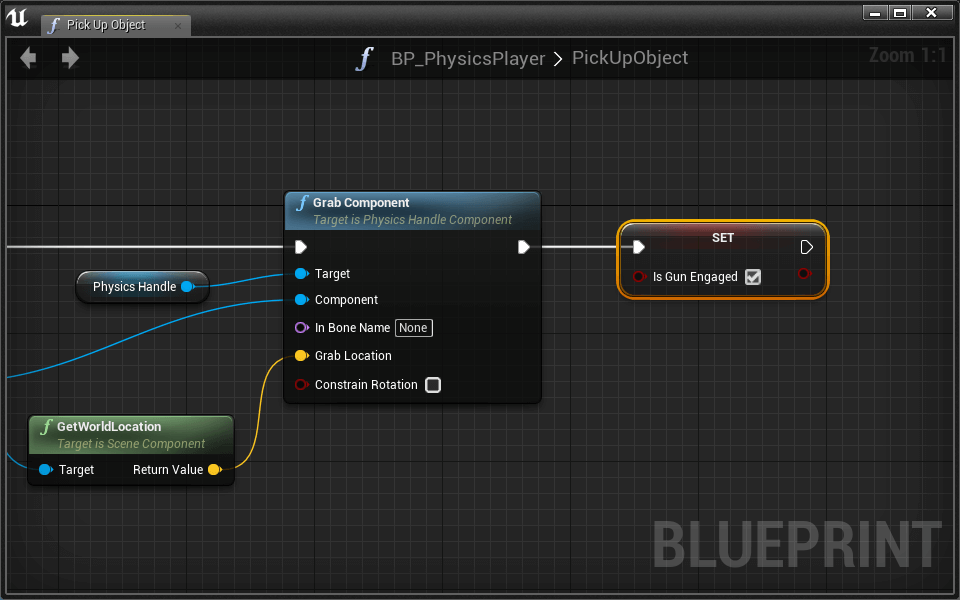
When we fire SecondaryAction, IsGunEngaged will tell us if we should Pick Up Object or launch an existing actor.
- Open the Event Graph
- Insert a Branch between SecondaryAction and Pick Up Object
- Is Gun EngagedBranch > Condition
- Branch > FalsePick Up Object
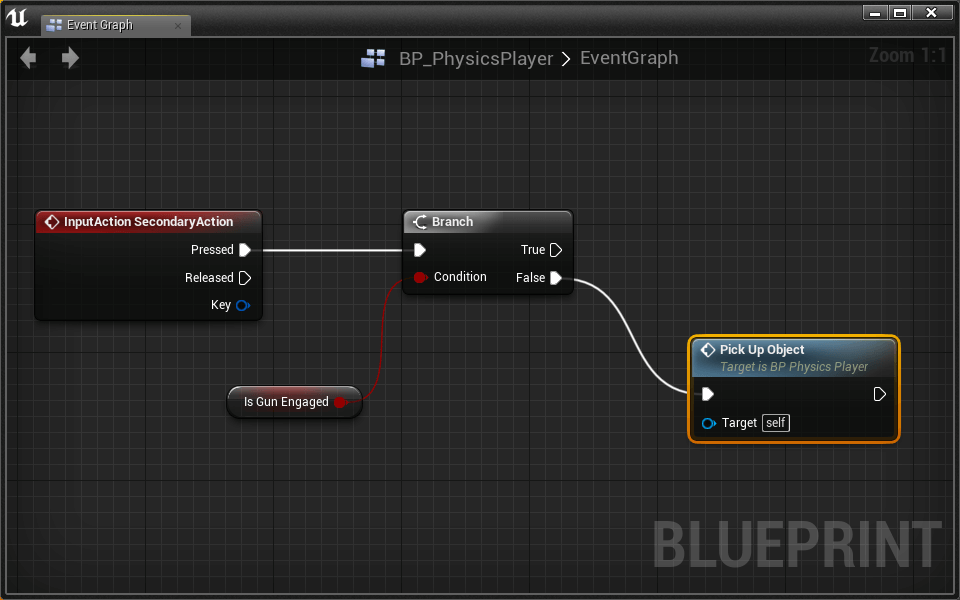
- Create a new function and call it “Launch Object”
- Branch > TrueLaunch Object
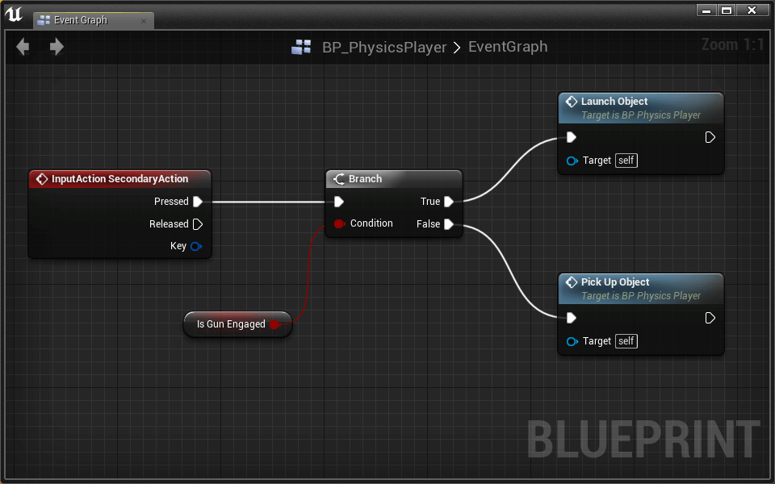
- Open the Launch Object function
To launch an object, we must first release it, then add a physics impulse.
- Place a Release Component (PhysicsHandle) node
- Place a Get Held Physics Object
- Pull a wire from Held Physics Object and place an Add Impulse node.
Challenge:
Our impulse should be in the direction of the camera’s forward vector and have a sufficiently large magnitude.
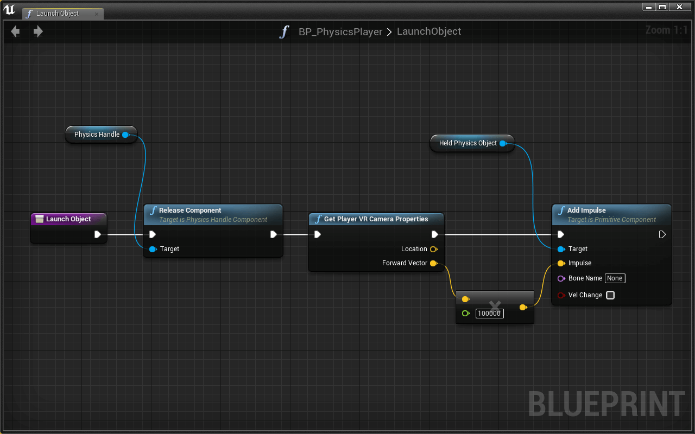
We need to reset our variables after releasing the held actor.
- Place a Set Held Physics Object with no input (this sets it to NULL)
- Place a Set Is Gun Engaged with an empty check box (setting it to false)
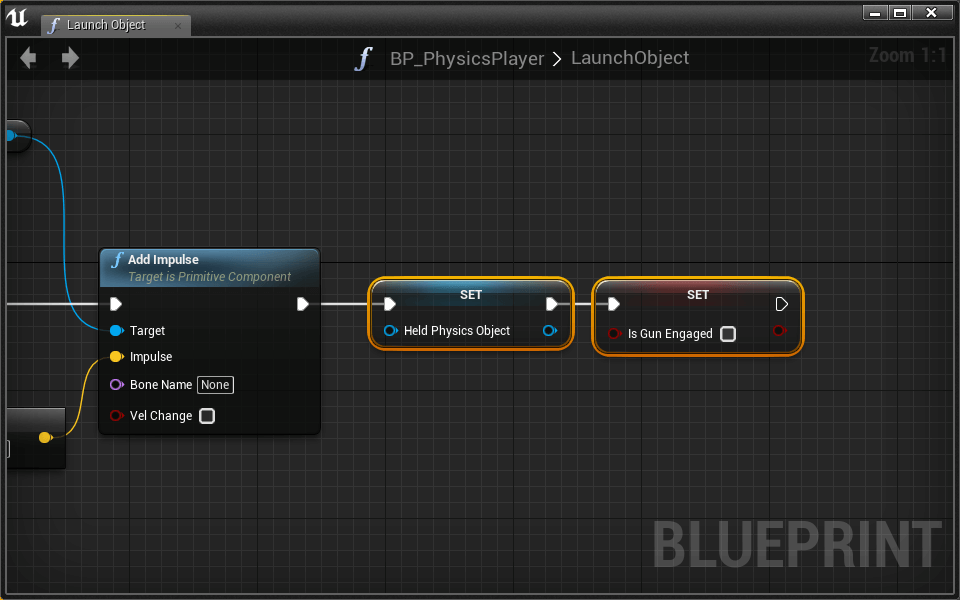
Conclusion
Whew - that was a lot of scripting! You now have a fully functional gravity gun that picks up and launches physics objects. You also have a generalizable workflow for selecting and manipulating actors in a scene.
There are many other useful physics nodes we didn’t cover in this tutorial. Explore all that UE4 has to offer here. Just remember that these functions only effect objects that simulate physics.
Project 5 - Physics
In this assignment, you’ll create a new experience that incorporates physics. Your experience should be developed in response to one of the following themes:
- Larger than life
- Out of sight, out of mind
- Like a flash
Your submission must meaningfully include physically enabled actors and/or components. The submission should demonstrate your understanding of physics in UE4.
Consider extending the gravity gun with additional behavior. Also consider using a player perspective other than first person.